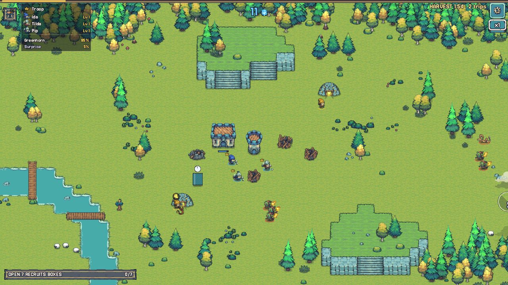

Version de test · privée
L'Atelier
Un auto-battler : ton armée récolte, grandit et affronte les boss pendant que tu achètes des améliorations et recrutes des capitaines.

Télécharger pour WindowsPour lancer le jeu
- Double-clique sur Atelier.exe.
- Si Windows affiche « Windows a protégé votre ordinateur », clique sur Informations complémentaires, puis Exécuter quand même. Le jeu n'est pas signé, c'est normal pour une version de test.
- Ta partie est sauvegardée automatiquement sur ton PC.